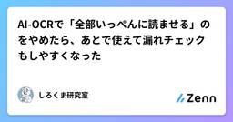
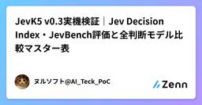
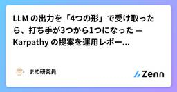
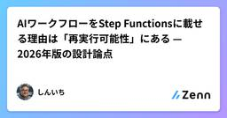
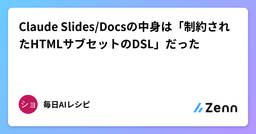
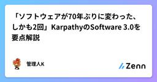

Zennの「大規模言語モデル」のフィード
フィード

MCPがセッションIDを捨ててステートレスになる2026-07-28仕様
Zennの「大規模言語モデル」のフィード
リモートのMCPサーバを2台以上に並べた瞬間に踏む地雷がある。1台目が発行したセッションIDを、ロードバランサの気まぐれで振り分けられた2台目が知らない、という問題だ。これを避けるために、みんなスティッキーセッションを効かせたり、共有のセッションストアを噛ませたり、ゲートウェイでリクエストボディを覗いて振り分けたりしてきた。本来HTTPの世界がとうに卒業したはずの苦労を、AIエージェント界隈は2年かけてもう一度やり直していた。その前提を、今日公開された Model Context Protocol の 2026-07-28 仕様がまるごと捨てた。MCP(LLMに外部ツールやデータを繋ぐ...
10時間前

AI Security Labの実験環境 ― OllamaとPythonでLLMの動作を実験する
Zennの「大規模言語モデル」のフィード
はじめに前回の記事では、AI Security Labを始める理由と、このLabで何を明らかにしたいのかについて説明しました。AI Security Labを始める ― AIに、どこまで仕事を任せられるのかAIに、どこまで仕事を任せてよいのか？この問いについて、AIを実際に動かし、意図的に条件を変えながら実験していきます。そのためには、実験ごとに環境が変わってしまうと、結果を比較しにくくなります。そこで、AI Security Labでは、できるだけ共通した環境を使って実験を行っています。この記事では、今後の記事で共通して利用する実験環境について説明します。実験そ...
11時間前

Jevがポケモンをクリアした。でも裏にClaudeがいた──AIも「上司」と「現場担当」に分かれ始めた
Zennの「大規模言語モデル」のフィード
少し前に、JevというAIについて書きました。文章を生成するAIではなく、「この中ならどれ？」 を高速に判断するAIです。例えば、この問い合わせはA. 営業B. サポートC. 請求D. その他のどれ？みたいな判断。LLMに比べると、かなり地味です。文章を書いてくれるわけでもない。コードを書いてくれるわけでもない。人生相談にも乗ってくれない。選ぶ。判断する。点数を付ける。だいたいそれだけ。前の記事では、毎回LLMに部長会議を開かせなくてもいいのでは。という話を書きました。https://zenn.dev/yuruconsa/articles/...
12時間前

AI-OCRで「全部いっぺんに読ませる」のをやめたら、あとで使えて漏れチェックもしやすくなった
Zennの「大規模言語モデル」のフィード
「氏名、ふりがな、メール」と項目名を書いて渡した。返ってきた表に、メールが無い。申込書をVLM（画像を入力できるLLM）に1枚まるごと渡して、読む列まで指定したのに、こうなります。しかも毎回、消える列が違います。結論から書くと、この方式は捨てました。行き着いたのは、帳票OCRの世界に何十年も前からある古い設計です。そして効いたのは精度より、出力の形が毎回同じになることでした。あとで使いやすく、漏れもチェックしやすくなりました。速度と汎用性は捨てています。前回の記事で「様式ごとに事前登録が必要」と一行だけ書いて、それきりにしていました。今回はその中身の話です。https://ze...
12時間前
ドキュメントを読んでいて、どの瞬間でもすぐ AI とチャットできるリーダーを作った
Zennの「大規模言語モデル」のフィード
TL;DRローカルの HTML 文書をブラウザで開き、分からない語句をドラッグすると、その場に小さなチャット窓が開きます。答えはポップオーバー・子セクション・リンクのどれかの形で、文書の本文に直接書き込まれます。前の答えを待たずに、次の語句をいくつでも並行して聞けます作った理由は、読んでいる自分の意識を途切れさせないためです。ターミナルに移って質問を打ち、前の返答を待っているうちに、さっきまで何を読んでいたのかを忘れる。それを無くしたかったのです速さは、文書を一度だけ読ませたセッションを質問ごとに claude -p --resume <base> --fork-...
12時間前

公式コース「AIの能力と限界」を完走したので、4つの特性を無料モデルで実験してまとめる
Zennの「大規模言語モデル」のフィード
Claude Code 101、サブエージェント編、in action 編、AI活用力編と、Anthropic（アンソロピック／Claudeの開発元）の無料コースを受けては、記事にしてきました。今回は「AIの能力と限界」です。前回の「AI活用力」の姉妹コースで、あちらが人間側の力、こちらが機械側の特性を扱います。13レッスンを受けて、クイズに合格して修了しました！このコースの売りは、「AIはなぜここでは賢くて、あそこでは嘘をつくのか」を、4つの特性で説明し切ることです。✅ 特性は、次トークン予測・知識・作業記憶・操縦性の4つ。この4つを知っていれば、新しいモデルが出ても驚かなくなる、と...
14時間前

JevK5 v0.3実機検証｜Jev Decision Index・JevBench評価と全判断モデル比較マスター表 1
1
Zennの「大規模言語モデル」のフィード
!先に結論を言いますJevK5 v0.3（4B）は現行の小型Jevライクオープンモデルではトップクラス:ベンチマーク比較サイト「Benchmark Heaven」において JevK5 v0.3 4B は 総合 7 位 にランクインし、同規模の Imajev-4B（10位）を明確に突き放しました。当環境での実機検証でも、その極めて高い実力が裏付けられています。8B クラス（Lev-8B）を凌駕する分類精度と較正性能:統一評価ベンチマーク S1Bench（300問）において、分類 5 タスク正解率 86.80% を記録し、Full Attention 8B モデルである Le...
14時間前

Gemini APIの無料枠は「1日1,500回」ではなく「1モデル1日20回」だった（実測）
Zennの「大規模言語モデル」のフィード
Gemini APIの無料枠を、AIエージェントの実働部隊に使っていました。設定ファイルには「1日1,500リクエスト・1分15リクエスト」と書いていて、この数字を疑ったことはありませんでした。ところが実際に測ってみると、あるモデルの無料枠は1日20回でした。この記事は、その実測の記録と、そこから決めた運用です。!数字は2026年10月1日時点・gemini-3.6-flashでの実測です。無料枠の上限は変わります。自分の環境の上限は、下に書く方法で確かめてください。 何が起きたか別の用途でGeminiのキーを使ったところ、こう返ってきました。Quota exceeded...
14時間前

無料モデルのAIエージェントが失敗する7つのパターンと直し方（成功率19%の現場から）
Zennの「大規模言語モデル」のフィード
Claude Codeを司令塔にして、実働は無料モデルのエージェントに任せる、という体制で1か月運営しました。実働エージェントの成功率は、**2体のうち一方が46%（39/85）、もう一方が19%（20/106）**でした（2026年10月1日時点）。最初は「無料モデルだから仕方ない」と思っていました。でも失敗を一件ずつ見ていくと、ほとんどが次の7つのどれかで、多くは渡し方と確かめ方で防げるものでした。 1. 時間切れ（いちばん多い）無料モデルは応答が遅く、大きな作業を渡すと制限時間内に終わりません。直し方： 1回の作業を15分以内に収まる大きさに切る。「記事を全文リライト」...
14時間前

LLM の出力を「4つの形」で受け取ったら、打ち手が3つから1つになった — Karpathy の提案を運用レポートで試す
Zennの「大規模言語モデル」のフィード
Karpathy が 10/2 に、LLM の出力を理解するための形について書いていました。要点は次の4つです。文章なら、ASD-STE100（航空整備マニュアル向けの制限言語）で書かせると読みやすいそれより図のほうが読みやすいそれより HTML のほうが読みやすいいちばん期待しているのは、テーマごとに作る解説動画元の投稿: https://x.com/karpathy/status/2105819303471976479自分は個人プロジェクトで、AIエージェントに約30媒体の発信を任せています。毎朝エージェントが「Individual Report」という運用レポートを...
14時間前

Claude Code のトークンは96.3%が「読み直し」だった — 効いた対策と、効果の正しい測り方
Zennの「大規模言語モデル」のフィード
定額プランなのに週の上限に当たる。あるいは API 請求が思ったより伸びている。そんなとき、「何にトークンを使ったか」を1行で説明できますか?私はできませんでした。だから測りました。結果はかなり意外で、そして自分が疑っていた犯人は全員シロでした。先に結論を書きます。私の消費の **96.3% は、自分が書かせた文章ではなく「過去の文脈の読み直し」**でした。そして5週間後、運用を見直してから Claude に測り直させると「86%減っています。運用改善が効いています」と報告してきました。でも私には「その週、そもそもあまり使ってなかったのでは?」という引っかかりがありました。物...
15時間前

ローカルLLM（Qwen3:8b, Qwen3:14b）に人狼をやらせて、推論能力を検証してみた
Zennの「大規模言語モデル」のフィード
はじめに今回は、LLMに人狼をやらせてみたら面白いかなと思ったので、人狼システムを自作してLLM同士で遊ばせてみました。最初は9人村でやっていたんですが、結局LLMの何を見ているのかが曖昧になるログがくそ長くなって、試合内容を把握するのが面倒トークン数も膨大になる（全員が全員の発言を読むので、人数が増えるとピラミッド的に増えていく感じです）という感じだったので、4〜5人くらいの単純な村から実験していくことにしました。今回は 5人村（人狼1・狂人1・占い師1・狩人1・市民1） で実験したので、その結果を共有しようと思います。なお、今回の実験の目的は、人狼が強いLLMを...
15時間前

GPT-6のプロンプトキャッシュを壊さない設計──固定プレフィックスと可変コンテキストを分離する
Zennの「大規模言語モデル」のフィード
長時間動くAIエージェントでは、同じシステム指示、ツール定義、参照情報を毎回送ることがあります。モデルの単価だけを下げても、この共有部分を毎回処理すれば、待ち時間と費用は積み上がります。OpenAIは2026年9月22日、GPT-6向けプロンプトキャッシュの改善と、キャッシュヒット率を監視・診断する機能を発表しました。本稿では公式情報を起点に、キャッシュを壊しにくいコンテキスト設計と、運用時に見る指標を整理します。 一次情報OpenAI: Better prompt caching for GPT-6OpenAI: Introducing GPT-6 Sol and Luna...
16時間前

RAGは「検索して答える」だけでは足りない 基本・設計・評価の実践ガイドを書いた
Zennの「大規模言語モデル」のフィード
はじめに「RAGを組んだ。質問すれば、それらしい回答も返ってくる」——そこまで動くと、ひとまず完成したように感じる。しかし、データには存在する施設が検索結果に出ない。出典に書かれていない予約条件をAIが補ってしまう。データを更新したのに、古い情報が検索に残る。こうした問題は、回答が自然に読めるかどうかを見ているだけでは気づきにくい。自治体の相談先検索アプリ「Trait Compass」を題材に、この問題をRAGの基本・設計・評価の三つの観点から整理した本を公開した。https://zenn.dev/yun_bow/books/95ad28d3438f4d本稿では『RAGの基...
16時間前

OpenAIの
Zennの「大規模言語モデル」のフィード
2026年の開発基盤で今すぐ対応すべき3つの大激変 この記事で分かることLLM単体の精度推移から「業務特化型AIエージェント」および「具身知能」へ主役が交代した背景OpenAIによるAstral買収がPythonツールチェーンと開発体験に与える決定的な影響Webネイティブ化するMCPの動向と Next.jsで即座に対応すべき緊急RCE脆弱性の詳細 LLM推論競争の終焉と「AIエージェント・具身知能」へ移行すべき理由AIプロダクトの評価軸は、単一モデルの推論能力を競う段階から、自律的にタスクを遂行する「AIエージェント」および物理世界や実業務に適応する「具身知能」へ...
17時間前

AIワークフローをStep Functionsに載せる理由は「再実行可能性」にある — 2026年版の設計論点
Zennの「大規模言語モデル」のフィード
LLMの多段処理をワークフローエンジンに載せる価値は、並列化による速さよりも、失敗時に「どこまで終わり、何をやり直すか」が定義から決まることにあります。2026年10月時点の公開情報で、Step Functionsを使ったAIワークフローの設計を整理しました。 前提の更新2024年11月のJSONataと変数（Assign）対応で、ResultPathでペイロードに状態を継ぎ足す書き方は不要になりました。Distributed MapはJSONL・Parquet・Athenaマニフェストを直接読めます。2026年3月にはAgentCoreやS3 VectorsがSDK統合に加わり、...
18時間前

Claude Slides/Docsの中身は「制約されたHTMLサブセットのDSL」だった
Zennの「大規模言語モデル」のフィード
TL;DRAnthropicは2026年9月16日〜17日、Claudeのチャット上でスライド・ドキュメントをそのまま作れる「Claude Slides」「Claude Docs」をベータ公開した。エージェント機能「Claude Cowork」がChatチャット本体に統合された一環の発表である編集部（本セッション）は、この機能を動かしている開発者向けの実行環境から、実際にスライドを1つ作って検証した。中身は**任意のHTML/CSS/JSではなく、固定1920×1080キャンバス・インラインstyleのみ・プロパティごとに許可された値域を持つ「閉じたHTMLサブセット」**とい...
18時間前

「ソフトウェアが70年ぶりに変わった、しかも2回」KarpathyのSoftware 3.0を要点解説
Zennの「大規模言語モデル」のフィード
この記事についてAndrej Karpathy が Y Combinator の AI Startup School で語った「Software 3.0」の講演を、要点だけ抜き出して日本語で解説します。ソフトウェアの歴史的な転換を整理した、示唆に富む回です。!本記事は元動画の全文翻訳ではなく、紹介と論評を目的として筆者が要点を抜き出し、筆者の見解を主体に構成したものです。正確なニュアンスは元動画（Y Combinator / Andrej Karpathy）をご覧ください。 テーマ1：Software 3.0 とは何かKarpathy は、ソフトウェアの書き方が70年ぶ...
20時間前
同じLLMを使っているのに成功率が全然違う — AIコーディングツールの差は「ハーネス」だった
Zennの「大規模言語モデル」のフィード
AIコーディングエージェントを同一タスク・同一モデルで実測比較するサイト「AIエディターラボ」を運営しています。https://labo.mond.jpその中で、同じLLMを使っているはずなのにツールによって成功率がまるで違うという現象にぶつかりました。繰り返し計測した末に分かったのは、差を生んでいたのはモデルではなく「ハーネス」（モデルを囲むツール側の仕組み）だった、という話です。 前提: 実験の条件モデルは全ツール共通: Gemini の gemini-3.5-flash-lite（BYOK）タスク: バグ修正・機能追加・リファクタリング・テスト生成・ドキュメント・...
1日前

手を動かして学ぶ LLMファインチューニングとモデル最適化 ― SFT・LoRA・DPO・量子化・蒸留をCPUだけで一巡させる
Zennの「大規模言語モデル」のフィード
>本教材は、プロンプトと RAG では届かない要求（出力形式を厳密に守らせる、専門用語の言い回しを揃える、小さく安く速いモデルで済ませる）に対して、モデル自体を学習・軽量化して応える力を身につけるための実践教材です。GPU は不要です。すべての演習を CPU の Docker 環境で完走できるよう、1億3千万パラメータ級の小型モデルと数百件のデータで設計してあります。「GPU が無いから学習は試せない」で止まっていた方が、SFT・LoRA・DPO・量子化・蒸留の一巡を自分の手で回し、実務でどこに投資すべきかを判断できるようになることを目的としています。>プロンプト・RAG・ファインチューニングの判断表を自分で書けるようになり、SFT データの設計（収集・重複除去・汚染対策・chat template・ライセンス）とトークナイザの扱い（loss マスクでプロンプト部を学習させない）を実装できるようになります。フル微調整と LoRA を同じ題材で比較し、rank・alpha・target_modules の効き方とメモリ削減を実測できるようになります。学習が失敗したときの診断（loss が下がらない・NaN・学習率・勾配累積・シード再現性）、DPO による選好学習とペアデータ作成、学習後の回帰（忘却）の検出、int8/int4 量子化の原理と GGUF 変換・ONNX Runtime での量子化、蒸留による小型化、プルーニングや MoE の位置づけ、実験管理とモデルカードによる再現性の担保、そしてサービングを見据えた学習側の設計まで、モデルを預かる立場で判断できる状態を目指します。
1日前